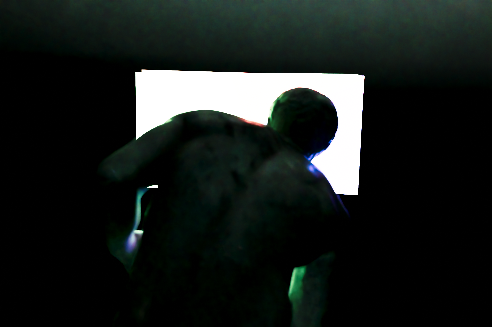

Liminal
3D Ruimtes die als een herrinering aanvoelen.


Vandaag had ik plots de ingeving om iets te maken in een liminalspace-sfeer, geïnspireerd door de backrooms.
Plots kwam ik in een creatieve flow state en begon ik een klein verhaal te maken gebaseerd op hoe ik me heb gevoeld.


Ik wil meer persoonlijke verhalen maken en ben de voorbije dagen gemotiveerd geweest om persoonlijke shortfilms te schrijven.
Iets persoonlijks maken verraste me, want ik maakte mijn favoriete visual ooit. Het is de vierde. Ik hou van de belichting; het doet me denken aan Unreal Tournament 99, waar ik enorm geobsedeerd door ben, en ik hou sowieso van deze scene.


De laatste tijd heb ik een liefde ontdekt voor storytelling en voor werken die persoonlijker zijn, dus verwacht daar binnenkort meer van!


Deze work kostte vandaag maar een paar uur van begin tot einde.